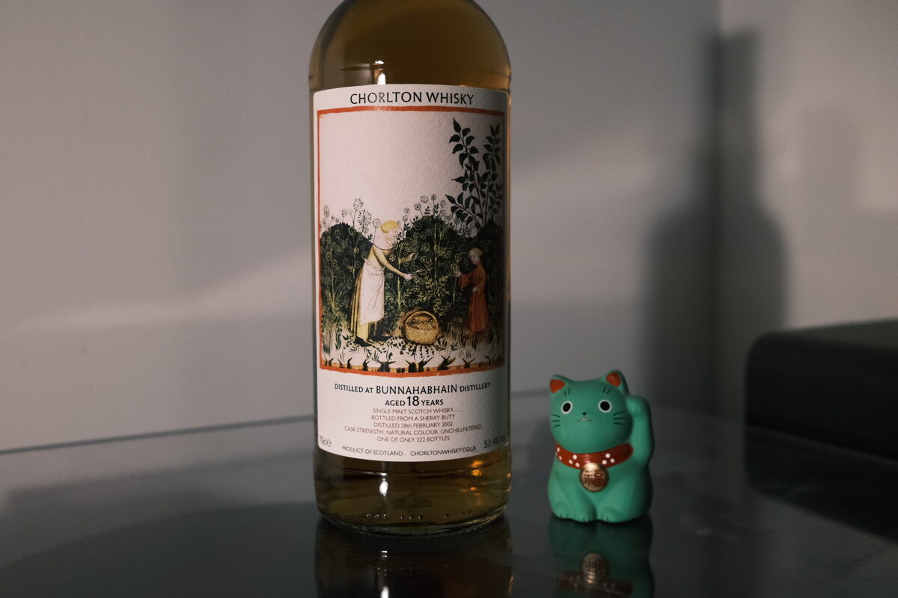

Bunnahabhain 2002 Chorlton 18 years 53.4% (sherry butt)
A Christmas release for Chorlton. Apt. Sherry, but the complete opposite of a sherry bomb. Tasted virtually with David Bennett (Chorlton) and the Whisky and Alement team.
More Chorlton trivia: David is buying more stock, thinking about the future. As for the past, cask prices have increased a lot over the last two years. Speculation has apparently played a role.
Colour Ruby.
Nose Banana caramel milkshake. Chewy toffee. Coastal – a little salty, earthy – more sandy. Red apples, candied apples. A waft of dried fruits and spots of milk chocolate. Quite rich, which is appropriate for a Christmas release. A touch of wax. Oak spices. A splash of sherry vinegar.
Palate Big raisin and sultana smack. but quite understated sherry.
Understated sherry. Entrance with classic dried fruits: raisins and sultanas. Rounded by oak spices, cinnamon, and cloves. Sweetness balanced by a touch of astringency, stemmy notes. Fruit mince tarts and panforte. Let’s riff with this Christmas theme. Oak spices, cinnamon, cloves. Thick, creamy texture. Every now and then, a pop of tart berry acidity. Interesting!
Finish Primarily spicy and fruity. A little tannic and tart. Not hot at all, but quite heady. Dark chocolate and coffee.
Comments Very high quality, and absolutely spot-on the Christmas theme. An elegant Christmas, to be sure, given the understatement of the cask. 87/100.

Posted by Dominic on 05 May 2021